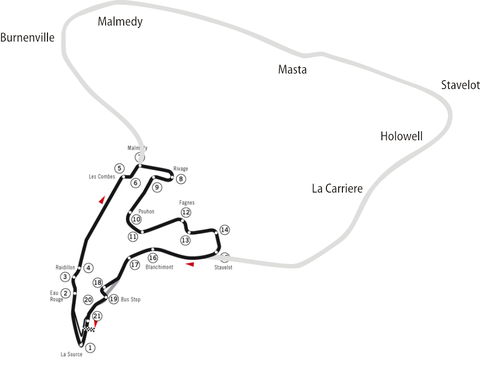
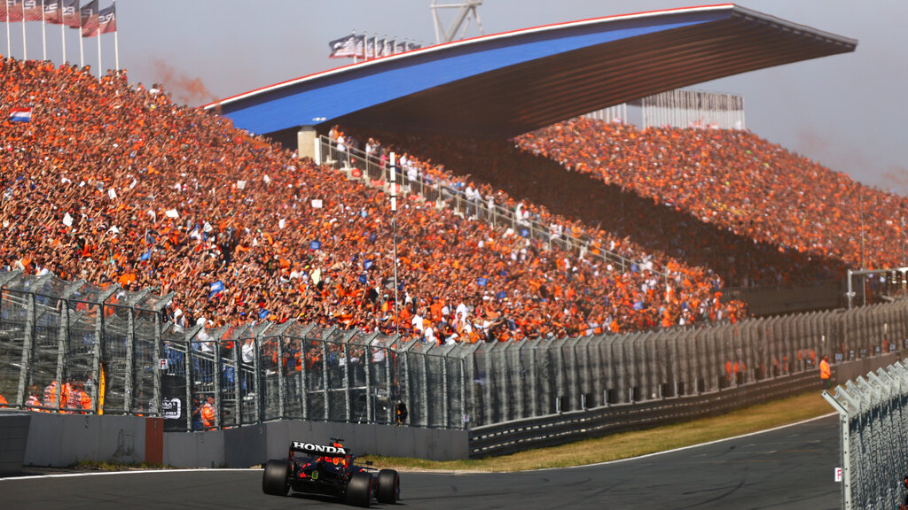

Circuits
Het laatste seizoen waren er 22 grand prix, dat zijn er iets te veel om allemaal te gaan omschrijven daarom zal ik er een paar omschrijven die naar mijn mening het belangrijkst of meest iconisch zijn.
Monza
Monza ligt in in Italië net iets ten noorden van Milaan. Het is een vrij kort circuit maar met veel geschiedenis. De Italiaanse fans ook wel de tifosi genoemd zien dit als hun thuis grand prix en dat zie je ook wel altijd door de gigantische hoeveelheid tifosi die allemaal ferrari supporten.
Charles Lecrec(coureur van Ferrari) nadat hij daar had gewonnen
Spa Francorchamps
Spa Francorchamps ligt in België in de buurt van spa. Oorspronkelijk ging het circuit over de straten in de Ardennen heen des tijds was het circuit 15km maar in 1979 werd het ingekort tot 7km en werd het ook een appart circuit en ging het niet meer door de straten. Veel bochten zijn wel het zelfde gebleven. Afgelopen jaar ben ik ook naar de grand-prix daar geweest.
Oude circuit vergeleken met nu
Zandvoort
Zandvoort is het circuit wat in Nederland ligt. Er werd voor het eerst geraced in 1950 op Zandvoort geraced, na redelijk wat succesvole jaren wordt de grand-prix op Zandvoort in 1985 stopgezet. Pas in 2021 wordt er weer voor het eerst door formula 1 op geraced. Deze race wordt gewonnen door de Nederlander Max Verstappen. Na zijn overwinning werd hij flink toegejuicht door het publiek.
